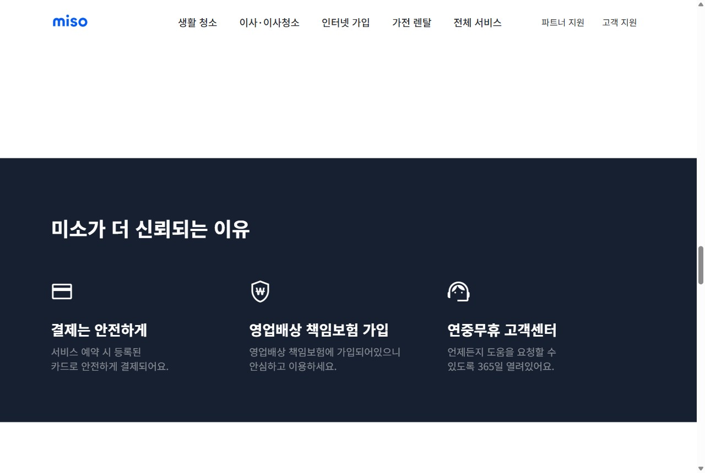
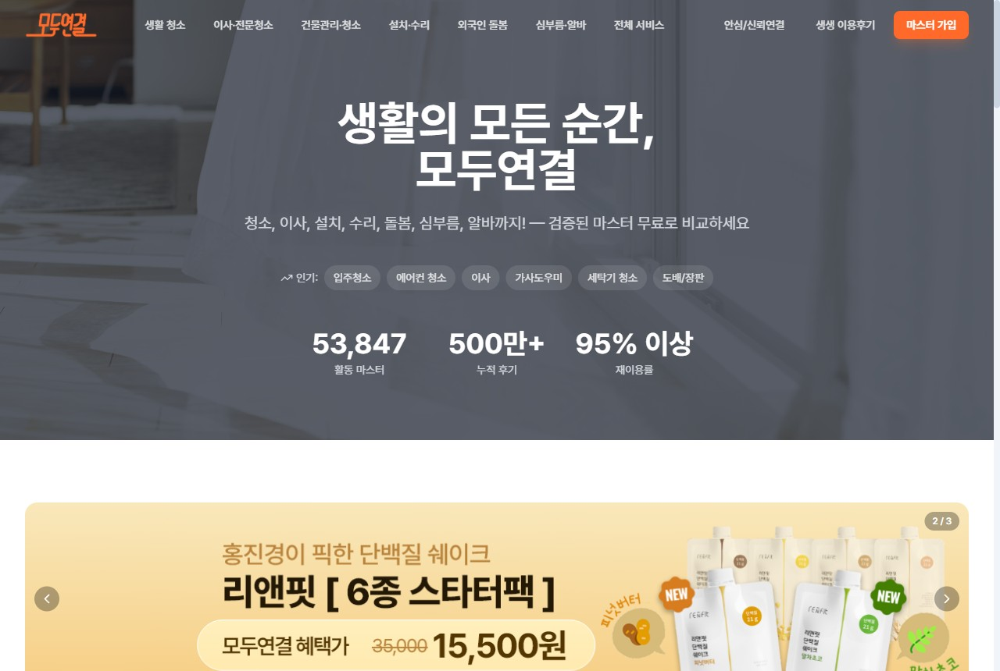
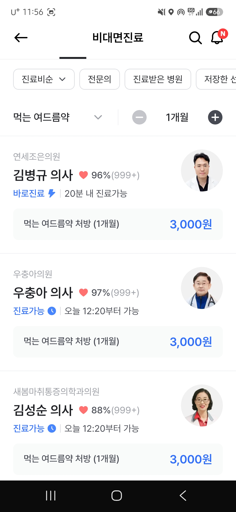
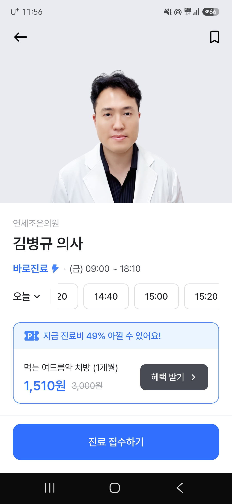

집에 모르는 사람을 들이는 서비스 — 구매를 가르는 건 가격이 아니라 '믿어도 될까'입니다. 신뢰를 USP로 세우고, 신뢰 소재로 풀퍼널을 설계해 전환율을 끌어올리는 전략을 제안합니다.
15만 매니저(공급) × 170만 다운로드(수요)라는 양면 자산은 강력합니다. 문제는 이 자산을 '전환'과 '재구매'로 환전하는 효율 — 거기서 약점이 보입니다.
출처 · THE VC·플래텀(매출 151억·투자 355억), 청소연구소 보도자료(매니저 15만·앱 170만). ※ 공개자료 기반.
청소는 단가·빈도에 한계. 한 고객에게서 더 자주·더 많이 사게 만들어 LTVLTV (고객 생애 가치) · 한 고객이 떠날 때까지 주는 총수익. 카테고리가 늘면 1인당 매출이 커진다.를 키우는 전략 — 공고가 말한 '다각화'.
신규 카테고리(반찬·집수리)는 인지·신뢰가 0에서 출발 → 신규 CACCAC (고객 획득 비용) · 신규 고객 1명 데려오는 비용.가 비싸다. '어떻게 싸게 획득하느냐'가 핵심 과제.
출처 · 채용공고(집청소·사무실·가전청소·집수리·반찬구독·청연케어·플러스샵 / '다각화' 명시).
매니저 품질 들쭉날쭉·노쇼·일방 취소 후기 → 첫 구매 망설임 + 재구매 이탈. 클릭당 비용을 써도 전환이 안 됨.
지속적 가격 인상으로 미소 등과 가격 비교 당함. 가격으로 싸우면 CAC만 오르고 마진이 깎임.
반찬·집수리를 청소와 같은 방식으로 사오면 효율 급락. 크로스셀크로스셀 · 기존 고객에게 다른 카테고리를 추가 판매. 신뢰가 이미 있어 CAC가 매우 낮다. 설계가 없으면 돈만 태운다.
매니저 공급이 얇은 지역에 광고를 쏘면 매칭 실패 = CAC 낭비. 수요·공급 정합이 안 맞으면 전환이 새어나간다.
출처 · 앱스토어·블라인드·커뮤니티 후기(품질 편차·노쇼·가격 인상). ※ 외부 관점 가설 — 입사 후 데이터로 검증.
모르는 사람을 들이는 결정 → 머릿속 질문은 "쌀까?"가 아니라 "믿어도 될까?".
광고로 관심은 사도, '안심' 장벽에서 전환이 막힌다. 가격 소구는 이 벽을 못 넘는다.
전환율↑ · 재구매↑ · 다각화 크로스셀↑ — 신뢰가 모든 레버의 열쇠.
＂'더 싼 청소'가 아니라 '믿고 맡기는 우리집 케어'를 파는 순간, 같은 광고비로 전환율이 오릅니다.＂
— 퍼포먼스 마케터의 일 = 트래픽을 사는 게 아니라 '신뢰의 벽'을 낮추는 것.
교육 수료·신원확인·고평점 매니저를 전면에. 15만 매니저 풀을 '많다'가 아니라 '검증됐다'로 재포지셔닝.
노쇼·불만족 시 재청소·전액환불·실시간 알림. 불안을 제거하는 약속을 광고 전면에 — 미소 대비 차별점.
신뢰가 쌓이면 청소→집수리→반찬으로 확장. '우리집 케어 파트너'라는 다각화 LTV 스토리.
광고 소구점을 '할인'에서 '안심'으로 전환 — 이게 곧 소재·랜딩·키워드를 관통하는 한 메시지가 됩니다.


공통 신뢰재 = ①검증 배지 ②배상보험·재청소 보장 ③평점·후기 ④실시간 알림. 청소연구소도 이 4종을 광고 소재·랜딩 첫 화면에 전면 배치해야 '안심'이 눈에 보입니다.
출처 · miso.kr/homeclean 실제 카피("역량 검증한 클리너"·"영업배상 책임보험"·"10명 중 9명 만족"), TaskRabbit·Handy 신뢰 장치(background check·guarantee). ※ 공개자료.


의사 사진·만족도(96%·999+)·즉시가능을 보여줘 환자가 직접 비교하고 선택 — 익명 배정이 아닌 '얼굴 있는 신뢰'.
사진·검증 배지·만족도·후기·경력·전문분야(반려동물·원룸·아이방 등)·즉시가능을 카드로 → 고객이 직접 선택·지정.
'누가 올지 모르는 불안' 제거 → 전환·재방문↑. 15만 매니저 풀이 '검증된 얼굴' 자산으로.
벤치마크 · 나만의닥터 비대면진료 — 의사 프로필·만족도 기반 선택 UX(사용자 제공 화면). 같은 원리를 청소 매니저 선택에 적용.
매번 새 사람을 들이는 불안 제거 → 재방문·정기 전환↑. '아는 사람'이 신뢰의 끝판왕.
단골 = 고정 수입·안정 → 공급 이탈↓. 양면 모두 이득인 구조.
재구매는 CAC≈0 → LTV↑. 지정 매칭으로 양면 매칭 효율도↑.
레퍼런스 · 미소 "이미 75%의 고객이 정기 서비스를 이용" — 재방문·연속성은 이미 시장의 핵심 수요. 이를 '전문가 지정 + Kakao 원클릭 재예약'으로 제품화·CRM 자동화.
선택·단골제를 그대로 두면 인기 매니저 쏠림 → 신규·저평점 매니저는 기회 0 → 공급 이탈 → 양면 붕괴. '공정한 분배 장치'가 반드시 필요합니다.
추천 상단에 신규 매니저를 일정 비율 우선 노출 + 첫 N건 매칭 보장 → 콜드스타트 해소.
교육 이수·뱃지 획득 시 노출 가중치↑. 저평점 매니저엔 피드백·재교육으로 품질을 끌어올림.
고객이 '지정' 안 하면 알고리즘이 평점·가용성·공정 분배를 함께 고려해 자동 배정 — 100% 선택제 아님.
비인기 시간대·지역은 저노출 매니저 우선 배정 + 고객 할인으로 매칭 → 공급-수요 미스매치 해소.
💡 퍼포먼스 효과 · 공급이 유지돼야 그 지역 수요 광고의 매칭률↑ = CAC 효율↑. 선택의 자유(신뢰)와 생태계 건강을 동시에 지킨다.
채널은 다르지만 메시지는 하나 — '검증된 매니저·안심 보장'. 단계마다 신뢰를 한 겹씩 쌓아 전환까지 끌고 갑니다.
측정 = MMPMMP (Airbridge) · 모바일 채널별 성과·기여도를 측정하는 도구. Airbridge(채널 기여) + GA4·Mixpanel(퍼널·코호트). 판단 기준은 클릭이 아니라 구매 전환·CAC·재구매.
반찬·집수리·가전청소를 신규 광고로 사오면 비싸다 → 이미 신뢰가 형성된 청소 고객에게 CRM 크로스셀. 신뢰 자산을 재활용해 CAC를 0에 가깝게.
수요 캠페인을 매니저 공급 밀도 높은 지역에 집중. Airbridge 지역별 CAC × 매칭률로 예산을 배분 → 매칭 실패 누수 제거.
①30일 — 퍼널·지역별 CAC 진단, 신뢰 소재(Before/After·보장) A/B ②60일 — 검색 수요 캡처·리타겟 정교화, Kakao 재구매 루프 ③90일 — 크로스셀·양면 정합으로 다각화 확장. 가격이 아니라 신뢰로 CAC↓ · 전환↑ · LTV↑를 만들겠습니다.